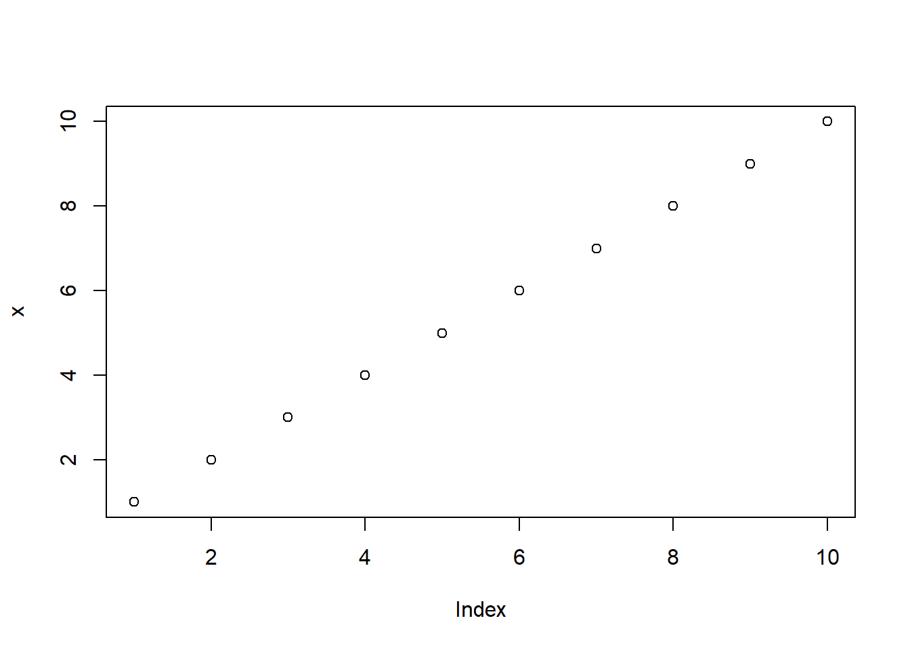
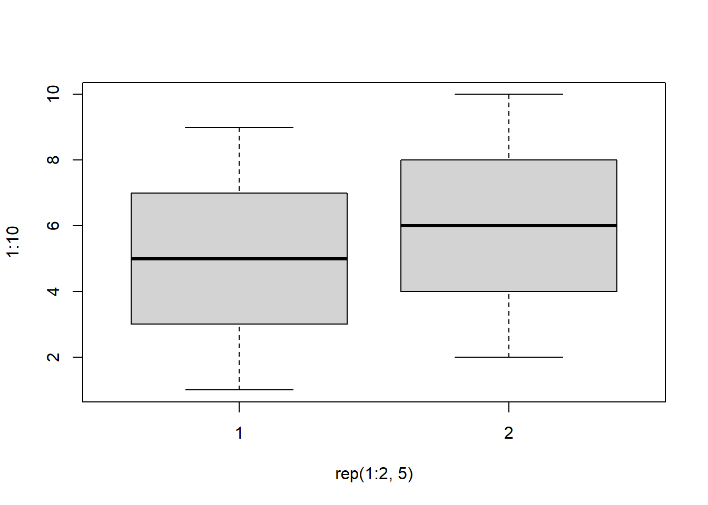
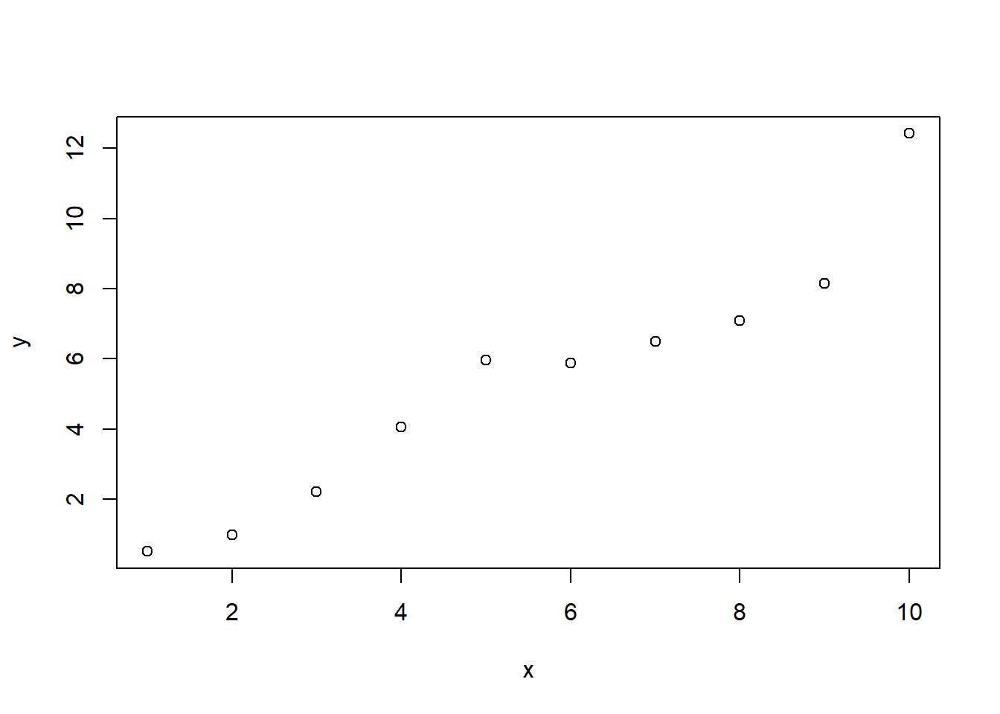
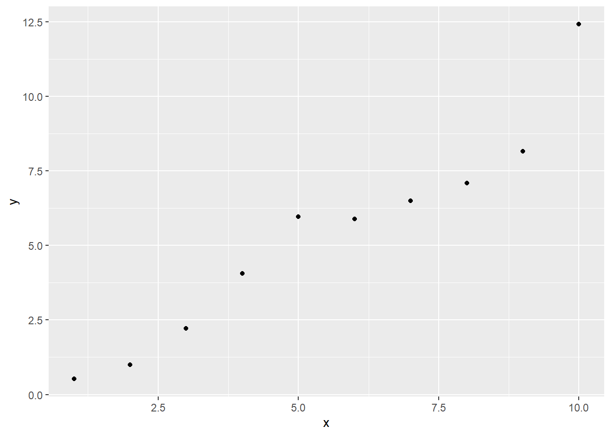
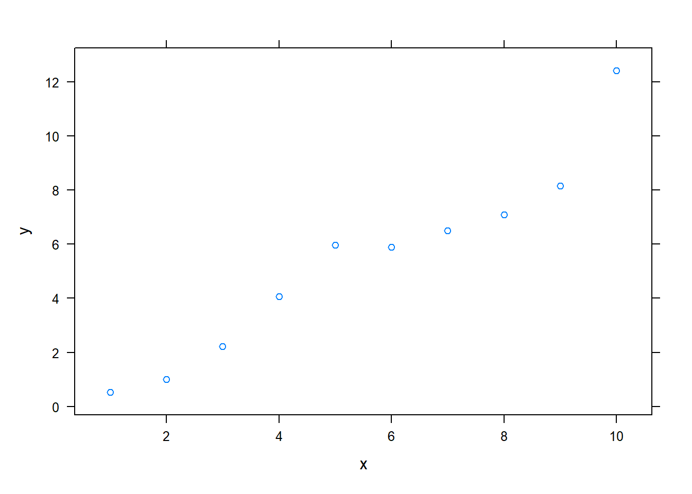
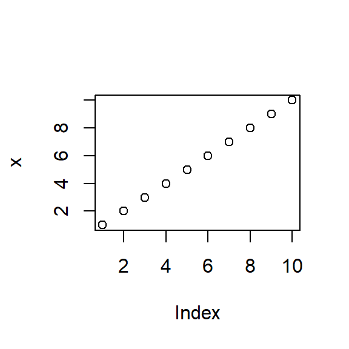

This post examines the features of R
Markdown using knitr in
Rstudio 0.96. This combination of tools provides an exciting improvement
in usability for reproducible
analysis. Specifically, this post (1) discusses getting started with
R Markdown and knitr in Rstudio 0.96; (2) provides a basic
example of producing console output and plots using R Markdown; (3)
highlights several code chunk options such as caching and controlling
how input and output is displayed; (4) demonstrates use of standard
Markdown notation as well as the extended features of formulas and
tables; and (5) discusses the implications of R Markdown. This post was
produced with R Markdown. The source code is available here as a gist.
The post may be most useful if the source code and displayed post are
viewed side by side. In some instances, I include a copy of the R
Markdown in the displayed HTML, but most of the time I assume you are
reading the source and post side by side.
Getting started
To work with R Markdown, if necessary:
- Install R
- Install the lastest version of RStudio (at time of posting, this is 0.96)
- Install the latest version of the
knitrpackage:install.packages("knitr")
To run the basic working example that produced this blog post:
- Open R Studio, and go to File - New - R Markdown
- If necessary install
ggplot2andlatticepackages:install.packages("ggplot2"); install.packages("lattice") - Paste in the contents of this gist (which contains the R Markdown
file used to produce this post) and save the file with an
.rmdextension - Click Knit HTML
Prepare for analyses
set.seed(1234)
library(ggplot2)
library(lattice)Basic console output
To insert an R code chunk, you can type it manually or just press
Chunks - Insert chunks or use the shortcut key. This will
produce the following code chunk:
Pressing tab when inside the braces will bring up code chunk options.
The following R code chunk labelled basicconsole is as
follows:
```r
x <- 1:10
y <- round(rnorm(10, x, 1), 2)
df <- data.frame(x, y)
df
```
```
## x y
## 1 1 -0.21
## 2 2 2.28
## 3 3 4.08
## 4 4 1.65
## 5 5 5.43
## 6 6 6.51
## 7 7 6.43
## 8 8 7.45
## 9 9 8.44
## 10 10 9.11
```The code chunk input and output is then displayed as follows:
x <- 1:10
y <- round(rnorm(10, x, 1), 2)
df <- data.frame(x, y)
df## x y
## 1 1 0.52
## 2 2 1.00
## 3 3 2.22
## 4 4 4.06
## 5 5 5.96
## 6 6 5.89
## 7 7 6.49
## 8 8 7.09
## 9 9 8.16
## 10 10 12.42Plots
Images generated by knitr are saved in a figures folder.
However, they also appear to be represented in the HTML output using a
data URI
scheme. This means that you can paste the HTML into a blog post or
discussion forum and you don’t have to worry about finding a place to
store the images; they’re embedded in the HTML.
Simple plot
Here is a basic plot using base graphics:
```r
plot(x)
```
<img src="example-r-markdown_files/figure-html/unnamed-chunk-4-1.png" width="672" />plot(x)
Note that unlike traditional Sweave, there is no need to write
fig=TRUE.
Multiple plots
Also, unlike traditional Sweave, you can include multiple plots in one code chunk:
```r
boxplot(1:10~rep(1:2,5))
```
<img src="example-r-markdown_files/figure-html/unnamed-chunk-5-1.png" width="672" />
```r
plot(x, y)
```
<img src="example-r-markdown_files/figure-html/unnamed-chunk-5-2.png" width="672" />boxplot(1:10~rep(1:2,5))
plot(x, y)
ggplot2 plot
Ggplot2 plots work well:
qplot(x, y, data=df)
lattice plot
As do lattice plots:
xyplot(y~x)
Note that unlike traditional Sweave, there is no need to print lattice plots directly.
R Code chunk features
Create Markdown code from R
The following code hides the command input (i.e.,
echo=FALSE), and outputs the content directly as code
(i.e., results=asis, which is similar to
results=tex in Sweave).
Here are some dot points
* The value of y[1] is 0.52
* The value of y[2] is 1
* The value of y[3] is 2.22Here are some dot points
- The value of y[1] is 0.52
- The value of y[2] is 1
- The value of y[3] is 2.22
Create Markdown table code from R
x | y
--- | ---
1 | 0.52
2 | 1
3 | 2.22
4 | 4.06
5 | 5.96
6 | 5.89
7 | 6.49
8 | 7.09
9 | 8.16
10 | 12.42| x | y |
|---|---|
| 1 | 0.52 |
| 2 | 1 |
| 3 | 2.22 |
| 4 | 4.06 |
| 5 | 5.96 |
| 6 | 5.89 |
| 7 | 6.49 |
| 8 | 7.09 |
| 9 | 8.16 |
| 10 | 12.42 |
Control output display
The folllowing code supresses display of R input commands (i.e.,
echo=FALSE) and removes any preceding text from console
output (comment=""; the default is
comment="##").
```
x y
1 1 0.52
2 2 1.00
3 3 2.22
4 4 4.06
5 5 5.96
6 6 5.89
``` x y
1 1 0.52
2 2 1.00
3 3 2.22
4 4 4.06
5 5 5.96
6 6 5.89Control figure size
The following is an example of a smaller figure using
fig.width and fig.height options.
```r
plot(x)
```
<img src="example-r-markdown_files/figure-html/unnamed-chunk-10-1.png" width="288" />plot(x)
Cache analysis
Caching analyses is straightforward. Here’s example code. On the first run on my computer, this took about 10 seconds. On subsequent runs, this code was not run.
If you want to rerun cached code chunks, just delete the contents of
the cache folder
```r
for (i in 1:5000) {
lm((i+1)~i)
}
```Basic markdown functionality
For those not familiar with standard Markdown, the following may be useful. See the source code for how to produce such points. However, RStudio does include a Markdown quick reference button that adequatly covers this material.
Dot Points
Simple dot points:
- Point 1
- Point 2
- Point 3
and numeric dot points:
- Number 1
- Number 2
- Number 3
and nested dot points:
- A
- A.1
- A.2
- B
- B.1
- B.2
Equations
Equations are included by using LaTeX notation and including them either between single dollar signs (inline equations) or double dollar signs (displayed equations). If you hang around the Q&A site CrossValidated you’ll be familiar with this idea.
There are inline equations such as \(y_i = \alpha + \beta x_i + e_i\).
And displayed formulas:
\[\frac{1}{1+\exp(-x)}\]
knitr provides self-contained HTML code that calls a Mathjax script to display formulas. However, in order to include the script in my blog posts I took the script and incorporated it into my blogger template. If you are viewing this post through syndication or an RSS reader, this may not work. You may need to view this post on my website.
Tables
Tables can be included using the following notation
| A | B | C |
|---|---|---|
| 1 | Male | Blue |
| 2 | Female | Pink |
Hyperlinks
- If you like this post, you may wish to subscribe to my RSS feed.
Images
Here’s an example image:

image from redmond barry building unimelb
Code
Here is Markdown R code chunk displayed as code:
```r
x <- 1:10
x
```
```
## [1] 1 2 3 4 5 6 7 8 9 10
```And then there’s inline code such as x <- 1:10.
Quote
Let’s quote some stuff:
To be, or not to be, that is the question: Whether ’tis nobler in the mind to suffer The slings and arrows of outrageous fortune,
Conclusion
- R Markdown is awesome.
- The ratio of markup to content is excellent.
- For exploratory analyses, blog posts, and the like R Markdown will be a powerful productivity booster.
- For journal articles, LaTeX will presumably still be required.
- The RStudio team have made the whole process very user friendly.
- RStudio provides useful shortcut keys for compiling to HTML, and running code chunks. These shortcut keys are presented in a clear way.
- The incorporated extensions to Markdown, particularly formula and table support, are particularly useful.
- Jump-to-chunk feature facilitates navigation. It helps if your code chunks have informative names.
- Code completion on R code chunk options is really helpful. See also chunk options documentation on the knitr website.
- Other recent posts on R markdown include those by :
- Christopher Gandrud
- Markcus Gesmann
- Rstudio on R Markdown
- Yihui Xie: I really want to
thank him for developing
knitr. He has also posted this example of R Markdown.
Questions
The following are a few questions I encountered along the way that
might interest others. ### Annoying <br/>’s
Question: I asked on the Rstudio discussion site: Why
does Markdown to HTML insert <br/> on new
lines?
Answer: I just do a find and delete on this text for now.
Temporarily disable caching
Question: I asked on StackOverflow about How to set cache=FALSE for a knitr markdown document and override code chunk settings?
Answer: Delete the cache folder. But there are other possible workflows.
Equivalent of Sexpr
Question: I asked on Stack Overvlow about whether there an R Markdown equivalent to Sexpr in Sweave?.
Answer: Include the code between brackets of “backick r space” and “backtick”. E.g., in the source code I have calculated 2 + 2 = 4 .